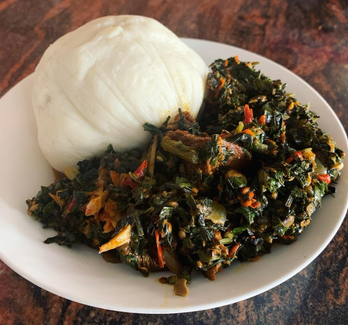

Iyan (Pounded Yam) and Efo Riro
Iyan (Pounded Yam) is a smooth, stretchy yam dish that’s a staple in many parts of Nigeria, especially among the Yoruba. It’s made by boiling yam and pounding it until it becomes soft, elastic, and dough-like. People usually serve it as a “swallow,” meaning it’s eaten by pinching off a small piece, shaping it with the fingers, and dipping it into a rich soup or stew. It’s known for its clean, slightly sweet yam flavor and satisfying texture.
Efo Riro is a vibrant, flavorful spinach stew from Yoruba cuisine. It’s built on a base of blended peppers, tomatoes, and onions, cooked down with palm oil, spices, and often crayfish for depth. Then the greens—traditionally efo shoko or efo tete, but spinach works well—are folded in along with proteins like beef, tripe, smoked fish, or stockfish. The result is a hearty, aromatic stew that pairs beautifully with pounded yam.
Together, Iyan and Efo Riro make a classic Nigerian comfort meal: soft, neutral pounded yam balanced by a bold, savory, pepper-rich vegetable stew.
How to Make It
IYAN (POUNDED YAM)
- Peel the yam and cut it into small cubes.
- Rinse about once or twice till you get clear water.
- Boil until the Yam becomes fork-tender.
- Pound or blend into a dough-like consistency until it's completely smooth with no yam chunks left.
EFO RIRO
- Wash, season and bring all meats to boil. Season with 1 tablespoon of salt, 2 cubes of maggi, 1 tablespoon of dry pepper and boil till meat is tender.
- Blend tomatoes and scotch bonnet peppers and boil till water dries.
- If using raw spinach, wash and blanch your spinach to get rid of excess water and shred.
- Separate meats and stock into different bowls. Heat up groundnut oil and fry meats till brown.
- Heat up palm oil and pour in chopped onions and fry.
- Pour in blended tomatoes and pepper and fry.
- Add stock, salt, maggi, crayfish powder, locust beans and leave to simmer for 5 minutes.
- Add fried meats and stir in.
- Add chopped spinach and stir in. Leave to simmer for 2 minutes.
- Serve with the Pounded yam.